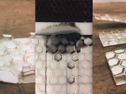
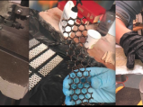
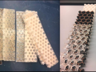
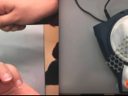
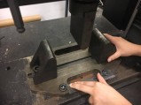
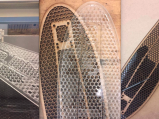
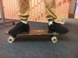
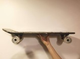
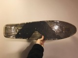
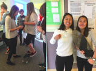

LASERCUTTING
we came in with a larger matrix of materials to test, including aluminum, cardboard, and foamcore. through lasercutting, we had to eliminate many of these
potential contenders because of their incompatibility with the lasercutter. we lasercut 20cm by 4cm test coupons with the Epilog Helix Legend.

COMPOSITE LAYUPS
we epoxied our coupons with TOTAL BOAT Epoxy Resin and TOTAL BOAT fast hardener, as well as with fiberglass. the coupons that were epoxied with fiberglass
needed to be bandsawed out of their sheets.

TEST COUPONS
for the 3-point bend test, we prepared both "bare core" test coupons and "fiberglass + core" test coupons.

CONSISTENCY
since we had three or four coupons for each material to test, we wanted to ensure consistency by measuring each coupon's average thickness and weight.

3-POINT BEND TEST
we used a test scenario of 4mm/min extension and an end-of-test scenario with a 40% load drop of a 100 N load. this test allows us to measure modulus of
elasticity, flexural stress, flexural strain, etc. most of the plastics fractured by delamination, and the hardboard and MDF had the highest yield points.
acrylic's performance drastically improved with the addition of fiberglass, more so than with any other material.

FINAL PENNYBOARDS
with three members, we wanted three pennyboards. we chose to make two out of MDF since it performed so well across the board in each of the fabrication
processes, as well as in the 3-point bend tests. we also chose to make one out of acrylic, more for cosmetic purposes than functional.

FINAL PENNYBOARDS: FEAT. HUMAN

FINAL PENNYBOARDS: SIDE VIEW

FINAL PENNYBOARDS: TOP VIEW
here, you can see the wear and tear from multiple test ride sessions

EXPO
we presented these boards at Olin's fall 2016 exposition, and let people try them out for themselves.
{kind=link}
{kind=link}
{kind=link}
{kind=link}
{kind=link}
{kind=link}
{kind=link}
{kind=link}
{kind=link}
{kind=link}